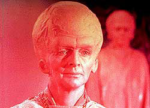
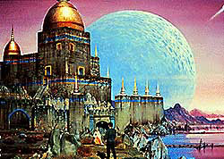
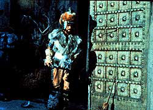
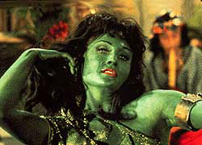

|
MANCHETE
DO EPISDIO
Primeiro piloto foi apontado como "muito
cerebral" para o pblico da rede NBC
Prximo
episdio
Sinopse:
Data Estelar: desconhecida.
Dez anos antes de James T. Kirk assumir o comando da USS Enterprise, o
capito Christopher Pike e sua tripulao recebem um pedido de
socorro do planeta Talos IV e se teleportam para investigar. Localizando
a fonte do sinal, o grupo de descida descobre sobreviventes de um
acidente de uma nave de pesquisa, a SS Columbia.
Entre os sobreviventes est uma bonita mulher, Vina. Pike acaba ficando
distrado pela beleza da sobrevivente e em razo disso capturado
pelos Talosianos que vivem no subsolo. O sinal de socorro e os
sobrevivente, excetuando-se Vina, eram iluses criadas pelos Talosianos
para atrair a Enterprise e Pike para o planeta.
 Os
Talosianos eram
uma espcie forte, mas aps dcadas de vidas dedicadas a iluses,
eles se atrofiaram fisicamente e precisavam de seres mais fortes para
reconstruir e repopular seu planeta destrudo. Em Pike, com Vina, os Talosianos
esperavam ter finalmente encontrado um ser que servisse a seus objetivos
de procriao para uma raa mais saudvel e mais poderosa.
Os aliengenas usam seu poder de iluso para instigar o interesse de
Pike em Vina, apresentando-a em vrios disfarces: uma princesa de Rigel
em perigo, uma escrava rion e uma amvel companheira. Quando Pike
resiste, os Talosianos trazem a Nmero Um, primeiro-oficial da
Enterprise,
e a ordenana do capito para que ele pudesse escolher entre uma das fmeas
disponveis.
O capito, no desistindo de combater os Talosianos, descobre que emoes
primitivas humanas neutralizam a habilidade Talosiana de ler mentes, e
eventualmente escapa para a superfcie do planeta, junto com as trs
mulheres.
Os Talosianos ainda voltam a encontrar Pike e os trs prisioneiros
antes que eles possam se teleportar, mas o capito se recusa a
negociar, ameaando matar a si mesmo e aos outros para no se submeter
s exigncias Talosianas. Temerosos de perder sua nica fonte de
repopulao, os talosianos estudam os registros da USS Enterprise e
descobrem que a espcie humana muito independente para servir
aos objetivos
deles.
 Sem
outra escolha, os Talosianos libertam os humanos. Aps a Nmero Um e a
ordenana Colt subirem a bordo, Pike pede a Vina que deixe o planeta
com ele. Apesar de sua crescente afeio pelo capito, Vina no pode
deixar Talos IV. Os aliengenas revelam que uma expedio realmente
se acidentou no planeta e que Vina, a nica sobrevivente, estava muito
machucada e desfigurada. Com a ajuda das iluses dos Talosianos, no
entanto, ela
ainda parecia ser bela e sentia-se saudvel.
Os Talosianos aceitam continuar fornecendo a Vina sua ilusria aparncia
de beleza e sade e permitem que Pike saia do planeta. Percebendo que
seria o melhor para Vina, Pike volta Enterprise. Os Talosianos, em um
ato de boa f, enviam uma imagem de Vina para a tela da nave. Ela no
apenas recuperou sua beleza, mas tambm ganhou outra iluso - a de que
Christopher Pike ficaria
com ela no planeta.
Comentrios:
"The Cage" um caso atpico de piloto para uma srie
de televiso. Apresenta apenas um personagem que continuaria na srie
ao longo de seus trs anos: Spock.
Tambm tem em comum com o resto da srie (embora com significativas
alteraes) o veculo de transporte: a nave estelar USS Enterprise.
difcil, portanto, incorporar esse episdio como sendo parte
integrante da srie original. O nico fator que permite que "The
Cage" seja incorporado saga de Jornada nas Estrelas
o aproveitamento de seu contedo no nico episdio de duas partes de
toda a srie, "The Menagerie".
Mesmo com as diferenas entre o piloto e o restante da srie, podemos
perceber alguns traos compartilhados por eles, principalmente no que
diz respeito aos assuntos abordados.
"The Cage" discute principalmente a
dificuldade do ser humano se adaptar ao cativeiro. Um dos maiores
valores compartilhados pela humanidade o de direito liberdade. "The
Cage" nos mostra que no possvel para o homem que o
aprisionamento seja agradvel, por mais que tentemos torn-lo confortvel.
 Se
a princpio, essa idia no nos parece das mais slidas,
analisando-a a partir da perspectiva do "castigo", punio
aplicada s crianas quando desobedientes, percebemos o quanto o
conceito verdadeiro. Uma criana pode passar vrias horas dentro do
seu quarto, brincando, divertindo-se, adorando estar naquele ambiente.
No entanto, quando ordenada que fique em seu quarto, como um castigo
por um mau comportamento, no h nada que a faa feliz, mesmo estando
em um local capaz de entret-la. O "castigo" no ficar no
quarto, a verdadeira punio o efeito psicolgico de estar preso.
Alm disso, outro aspecto abordado por "The Cage",
mais interessante, o de que devemos tirar proveito de nossos supostos
defeitos, nossas fraquezas. Transform-las em virtudes, em vantagens. O
Capito Pike faz isso ao usar o que existe de mais primitivo nos seres
humanos, as emoes bsicas, raiva, dio, para resistir ao controle
mental imposto pelos Talosianos.
Ser que esse conceito vlido, quando transposto da fico cientfica
para a realidade? Alimento para a mente...
O episdio ainda toca em dois conceitos: o perigo de uma guerra nuclear
- exibido atravs do destino dos Talosianos - e ainda, que as aparncias
podem enganar, pois se no incio somos levados a encarar os aliengenas
como malvolos, ao fim da histria, percebemos que no bem assim.
De qualquer forma, em seu conceito primordial, Jornada nas
Estrelas j se mostrava uma srie promissora, que colheria
milhes de fs no mundo todo, no simplesmente para entret-los mas
para provoc-los a refletir sobre o mundo e a condio humana. No
toa que os executivos da NBC consideraram o primeiro piloto de Jornada
"muito cerebral"...
Analisando o enredo, podemos perceber uma histria bem amarrada, com
comeo, meio e fim, com boa fluidez, no vai aos trancos, apresenta-se
cadenciada. Talvez o ritmo seja um pouco mais lento do que o ideal.
Falta um ponto de clmax, um momento em que o telespectador pra e
pensa: e agora? Mas pelos propsitos da narrativa, pelas questes
levantadas, e pelo grau de verossimilhana, o enredo pode ser
considerado bom.
Vendo sob a perspectiva dos personagens, a construo da histria
irretocvel. Vemos uma fora nos personagens, uma personalidade
definida, e mais do que isso, um senso de propsito. Desde j temos o
vulcano Spock (embora ainda estivesse em processo de amadurecimento, nem
fazendo sombra ao grande Spock dos episdios subseqentes), a Nmero
Um (segundo oficial na cadeia de comando, uma mulher, em 1964? Bravo!),
o Dr. Phillip Boyce, j se mostrando um proto-McCoy, e a nobreza de
intenes e a determinao do capito Christopher Pike, personagem
brilhantemente interpretado por Jeffrey Hunter.
 Alm
dos personagens regulares, temos a estonteante Vina, e os
inacreditavelmente aliengenas Talosianos. So por personagens como
esses que os trekkers se perguntam: como teria sido a srie se seguisse
os padres de "The Cage"?
Todos os aspectos de produo podem ser elogiados, desde o roteiro e a
direo, at os efeitos especiais (extremamente convincentes, levando
em conta as possibilidades tecnolgicas e oramentrias da poca),
passando pela cenografia criada para o planeta (reaproveitada em "Where
No Man Has Gone Before") e para a recriao da
batalha de Rigel VII (reutilizada em "Requiem for
Methuselah") e por detalhes sutis como as veias pulsantes
das enormes cabeas dos Talosianos (na verdade, veias inflveis, com
uma pequena bombinha de ar pressionada pela atriz que interpretava o
papel). A escolha de mulheres baixas e com traos faciais estranhos,
somada ao excelente trabalho de maquiagem e a dublagem dos aliengenas
com vozes masculinas ajudam muito a convencer o telespectador de que se
tratam, realmente, de aliengenas.
Por fim, vale fazer uma nota sobre a capacidade de se encaixar esta histria
de forma coerente na cronologia de Jornada nas Estrelas.
Por se tratar de um piloto, ainda mais no caso atpico de "The
Cage", at que foi possvel encaixar o contedo do episdio
no restante da srie. No entanto, alguns aspectos so inconciliveis,
como os procedimentos e a terminologia de locomoo, no que se refere
ao motor de dobra.
Citaes:
Pike - "Do you want me to try my
theory out on your head?"
("Voc quer que eu teste minha teoria na sua cabea?")
Trivia:
 Nesse piloto as armas no so "feisers", mas sim lasers. A
terminologia foi trocada por recomendao do consultor de cincia da
srie, para evitar que termos de coisas existentes fossem usados
imprecisamente. A mesma coisa aconteceu mais tarde com os cristais de ltio,
que viraram cristais de diltio.
Nesse piloto as armas no so "feisers", mas sim lasers. A
terminologia foi trocada por recomendao do consultor de cincia da
srie, para evitar que termos de coisas existentes fossem usados
imprecisamente. A mesma coisa aconteceu mais tarde com os cristais de ltio,
que viraram cristais de diltio.
Spock aparece mancando em uma cena em Talos IV. A explicao um
suposto envolvimento do personagem em um conflito anterior ao episdio,
fato mencionado no roteiro, mas editado da verso final.
Ficha
tcnica:
Escrito por Gene Roddenberry
Direo de Robert Butler
Produzido em 1964 (no foi ao ar)
Produo: 01
Elenco:
Jeffrey Hunter como Pike
Majel Barrett como Nmero Um
John Hoyt como Boyce
Peter Duryea como Tyler
Laurel Goodwin como Colt
Leonard Nimoy como Spock
Elenco convidado:
Susan Oliver como Vina
Meg Wyllie como Guardio
Malachi Throne como voz do Guardio
Prximo
episdio
|